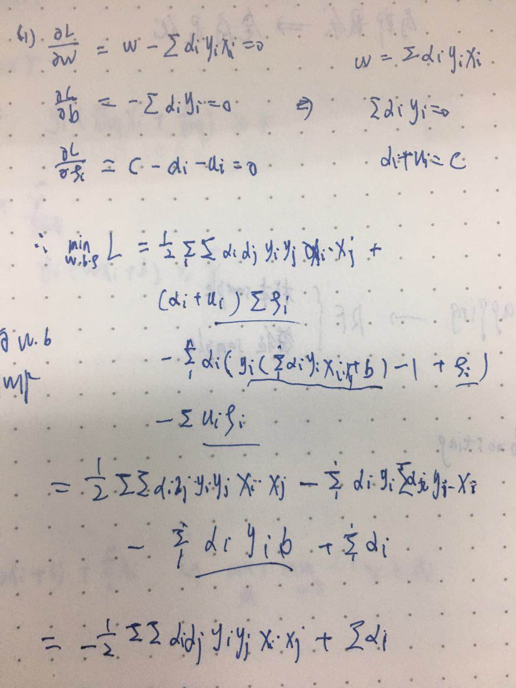
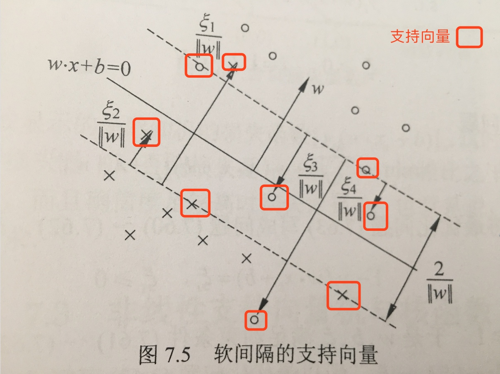
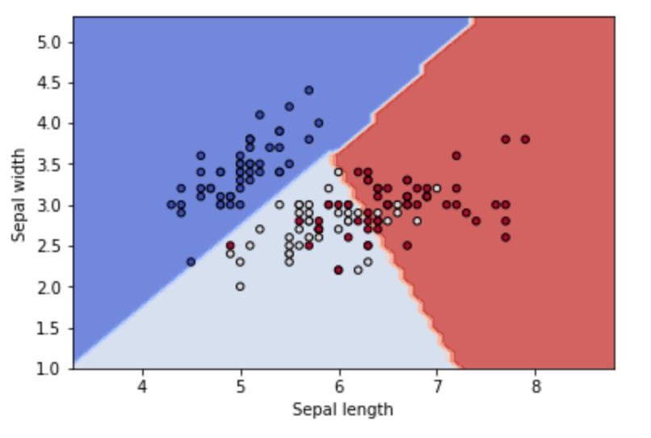

支持向量机SVM
所属 Topic：机器学习 · 类型：概念
支持向量机属于上一节中说的硬输出的方法，是从几何角度出发考虑的。
在介绍SVM之前，先解释一下几个基本概念。
基本概念#
函数间隔与几何间隔
一般的，一个点距离分离超平面的远近可以标识分类预测的确信程度。当超平面wx+b=0确定后，|wx+b|的大小能够相对的表示远近，而wx+b的符号与y类别是否一致则可以表示是否分类正确。
$d_i = y_i(wx_i+b)定义函数间隔d = \min d_i$
但是很明显的会发现这个间隔与w的量纲是有关系的，kw+kb与之前超平面是一样的，但是间隔却差了k倍。因此需要**几何间隔**
间隔最大化
有了前面关于间隔的定义，或者是关于分类距离的定义，就有了目标。SVM的目标就是: 求解能够将数据集正确划分并且几何间隔最大的分离超平面。
注：对于线性可分的数据，超平面有无数个(等价于感知机)，但是间隔最大的只有一个。间隔最大其实是两个要求:
- 能尽可能的将正负例区分开
- 对于难分的点(距离平面较近的点)也有很好的置信把握，即泛化能力会好一些
SVM对应的三种问题类型
根据分类问题，可分为以下三种
- 线性可分与硬间隔最大化
- 线性支持向量机与软间隔最大化
- 非线性支持向量机与核函数
这些会在下面中进行详细介绍
支持向量
这个需要看完下面关于三部分的介绍之后，再来了解这个概念。
- 在线性可分的情况下，样本中与超平面距离最近的样本点称为**支持向量**. 支持向量是满足y_i(wx_i+b)-1=0的点。
- 分隔边界最终只是由支持向量的点决定的，其他距离比较远的点并没有影响。
1.线性可分与硬间隔最大化#
先讨论一种最简单的情况，当数据集本身可以线性可分时候(实际数据中可能并没有这么好的性质)，我们只要找到对应的超平面即可。从前面的集合图形上我们的目标：希望每个点到超平面的间隔的最小值达到最大，即max min d_i
数学模型：$max_{w,b} d(几何间隔)$
$s.t \quad d_i = y_i(wx_i+b)>= d, i=1,..n$
因为几何间隔d=d'/||w||，所以原问题等价于
$max_{w,b} \frac{d'}{||w||}$
$s.t \quad d_i = y_i(wx_i+b)>= d', i=1,..n$
注意到
- 函数间隔的取值d'并不影响最优解w,b的求解。(如果w,b是最优解，则kw,kb也是，函数距离就是d'和kd')。所以这里可以取d'=1。
- 1/||w||与\frac{1}{2}||w||^2是等价的
因此最终优化的问题等价于如下的凸二次规划问题：
$min_{w,b} \frac{1}{2}||w||^2$
$s.t \quad d_i = y_i(wx_i+b) -1 >=0, i=1,..n$
解法：关于这个优化问题的解法，在后面会详细给出。可以证明这个解是存在且唯一的。
几何角度
- 过两个类的边界的点的平行线(wx-b=1, wx-b=-1)，有点类似于楚河汉界
- 将两条平行线进行旋转，保证同类划分不变。两者距离就会改变
- 落在两个平行线上的异类点就是**支持向量**
2.线性支持向量机与软间隔最大化#
上一节说的是对线性可分数据的，如果数据本身不可分该怎么办呢，此时线性分割必然存在误分类的点？对于线性不可分我们不可能要求其严格满足上面说的不等式约束。这时我们只能退而求其次：
思路：使得之前的几何间隔尽量大，同时使误分类的个数尽可能少
数学表示：对于每个样本，类似运筹学中的方法我们可以引入一个松弛变量\xi_i\ge 0,满足y_i(wx_i+b)\ge 1-\xi_i 之前是要求一定要大于等于1，现在因为并不完全可分，所以不一定要大于等于1。
数学模型：
这时候其实可以发现线性可分的相当于是这里的一种特殊情况，即\xi_i=0
求解：
该优化问题的拉格朗日函数是
$L(w,b,\xi,\alpha,u)=\frac{1}{2}||w||^2+C\sum\xi_i-\sum\alpha_i(y_i(wx_i+b)-1+\xi_i)-\sum u_i\xi_i$
因此原问题等价于 $\max_{\alpha,u}\min_{w,b,\xi}L$
（1）首先求L对w,b,\xi的极小

可得$\min_{w,b\xi}L=-\frac{1}{2}\sum_{i=1}^n\sum_{j=1}^n \alpha_i\alpha_jy_iy_j(x_i*x_j)+\sum_{i=1}^n\alpha_i$
(2) 再对\min L求最大，即有
$\max_{\alpha}-\frac{1}{2}\sum_{i=1}^n\sum_{j=1}^n \alpha_i\alpha_jy_iy_j(x_i*x_j)+\sum_{i=1}^n\alpha_i$
$s.t.\quad \sum\alpha_iy_i=0$
$C-\alpha_i-u_i>=0;\alpha_i>=0;u_i>=0$
最后一个条件其实等价于0\le\alpha_i\le C
对于线性可分问题其max函数是一样的，只是约束条件是0\le\alpha_i
【定理】若\alpha^*=(\alpha_1^*,...\alpha_n)是上述优化问题的一个解，若存在一个分量0<\alpha_j^*<C，则原始问题的解可按如下形式求得
$w^* = \sum\alpha_i^*y_ix_i$
$b^*=y_j-\sum_{i=1}^n y_i\alpha_i^*(x_i*x_j)$
从中可以发现b的解并不唯一。
最终的分离超平面是$\sum\alpha_i^*y_i(x_i*x_j)+b^*=0$
分类的决策函数是$f(x)=sign(\alpha_i^*y_i(x_i*x_j)+b^*)$
几何解释
- 如果在分解边界上，则\xi_i=0,距离是1
- 如果是在两个分界边界中间，0<\xi_i<1
- 越过分界边界，到了另外一边，\xi_i >1 这个时候y_i(wx_i+b)\ge 1-\xi_i是小于0的，属于误分类，在优化的时候会考虑

合页损失函数：与原优化问题等价的一种损失函数形式
$\min_{w,b} \sum[1-y_i(wx_i+b)]_{+}+\lambda||w||^2$
3.非线性支持向量机与核函数#
当数据的分布呈现的是一种非线性的时候，用之前的线性分割的方法肯定就会出现问题。比如数据是在一个椭圆内外分布，这个时候就需要先对原始数据做一个映射，x_1^2,x_2^2然后变成线性可分的。而这里主要用到了核技巧。
【核函数】如果存在一个映射\phi(x):X-> H,使得对于所有x,z\in X,函数K(x,z)满足
$K(x,z)=\phi(x)*\phi(z)$
则K(x,z)为核函数，\phi(x)为映射函数。
核函数的想法是：在学习中值定义核函数，而不显示的定义映射函数，通常映射函数不太好找且不唯一。
在支持向量机中的应用：
如前所述，在支持向量机的对偶问题中，只涉及样本之间的内积运算。$W(\alpha)=\max_{\alpha}-\frac{1}{2}\sum_{i=1}^n\sum_{j=1}^n \alpha_i\alpha_jy_iy_j(x_i*x_j)+\sum_{i=1}^n\alpha_i$
因此可以用核函数代替
$W(\alpha)=\max_{\alpha}-\frac{1}{2}\sum_{i=1}^n\sum_{j=1}^n \alpha_i\alpha_jy_iy_jK(x_i,x_j)+\sum_{i=1}^n\alpha_i$
常用的核函数
- 多项式核函数 K(x,z)=(x*z+1)^p
- 高斯核函数 K(x,z)=exp(\frac{-||x-z||^z}{2\sigma^2})
- 字符串核函数
优化算法SMO#
前面介绍了SVM中的三类问题，最终都是通过一个凸二次规划进行求解。当样本量较大的时候，SMO是一种相对求解较快的方法。简言之，是采用了启发式算法，每次只更新两个\alpha_i,\alpha_j
https://www.cnblogs.com/nolonely/p/6541527.html
Sequential Minimal Optimization A Fast Algorithm for Training Support Vector Machines
代码#
sklearn.svc模块 http://scikit-learn.org/stable/modules/svm.html#svm
主要包含
- SVC 标准的
from sklearn import svm
X = [[0, 0], [1, 1]]
y = [0, 1]
clf = svm.SVC()
clf.fit(X, y)
以iris数据为例
### iris数据
from sklearn import datasets, svm
import matplotlib.pyplot as plt
import numpy as np
iris = datasets.load_iris()
X = iris.data[:, :2]
y = iris.target
# model
C = 1.0
model = svm.SVC(kernel='linear', C=C)
model.fit(X, y)
## 绘制可视化图
x1 = X[:,0]
x2 = X[:,1]
h=0.1
x_min, x_max = x1.min()-1, x1.max()+1
y_min, y_max = x2.min()-1, x2.max()+1
xx,yy = np.meshgrid(np.arange(x_min, x_max, h),
np.arange(y_min, y_max, h)) #生成对应的坐标矩阵
Z = model.predict(np.c_[xx.ravel(), yy.ravel()]) # 在新的坐标点上预测分类
Z = Z.reshape(xx.shape)
plt.contourf(xx, yy, Z, cmap=plt.cm.coolwarm, alpha=0.8)
plt.scatter(x1, x2, c=y, cmap=plt.cm.coolwarm, s=20, edgecolors='k')
plt.xlabel('Sepal length')
plt.ylabel('Sepal width')

- NuSVC 与SVC的优化目标函数略微不同
- LinearSVC： 只针对linear kernel
在进行多分类的时候SVC中参数decision_function_shape可以选择是ovo还是ovr
LinearSVC是通过参数multi_class进行选择，